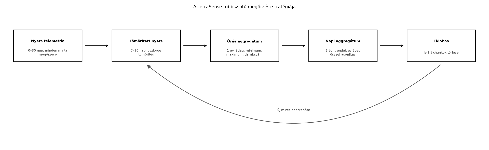
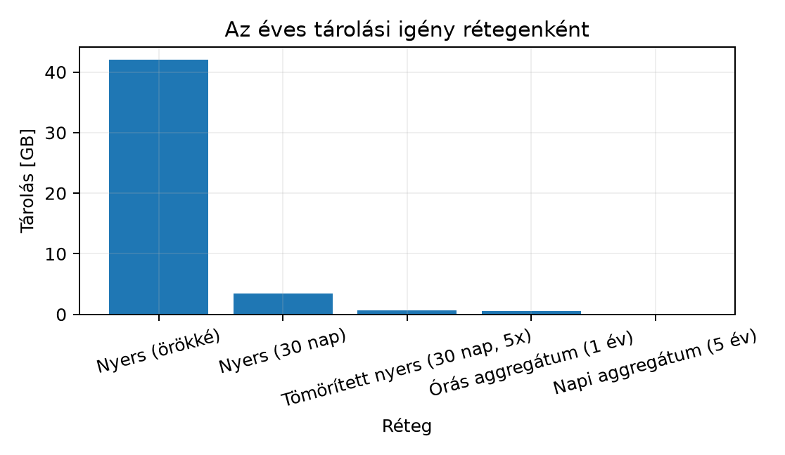

Az IoT-rendszer adatai folyamatosan, monoton módon keletkeznek: a TerraSense telemetriája másodpercenként vagy percenként érkezik, és soha nem „fogy el”. Ha minden nyers mintát korlátlan ideig tárolunk, a tárolási költség hamar meghaladja a rendszer értékét. Ugyanakkor a nyers adatok rövid távon fontosak a hibakereséshez, a hosszú távú trendekhez pedig elegendő az aggregált forma. Ebben az alfejezetben megtervezzük a TerraSense többszintű megőrzési stratégiáját, és bemutatjuk, hogyan automatizálja ezt TimescaleDB-ben a megőrzési házirend, a folyamatos aggregátum és a tömörítés.
Tegyük fel, hogy a TerraSense üvegház-telepén 1000
ts-node működik, mindegyik 1 percenként küld egy
telemetria-üzenetet három méréssel: hőmérséklet, relatív páratartalom és
talajnedvesség. A ts-backend ezt a idempotens ingest után az idősoros adatbázisba írja. Egy év alatt ez több
mint félmilliárd sor. Ha a nyers sorokat örökké tartjuk, a tárolási
költség lineárisan nő, és a lekérdezések is lassulnak. A megoldás nem az
adat eldobása, hanem a adattömörítés időben és tömörítési
formában: a régi nyers adatot rövid megőrzés után tömörítjük,
majd később aggregált formába sűrítjük.
Definíció (megőrzési stratégia, retention strategy). Az idősoros adatbázisban előírt szabályrendszer, amely meghatározza, hogy az egyes adatfelbontások (nyers, órás, napi) mennyi ideig őrződnek meg, és mi történik a lejárt adatokkal (eldobás, archiválás, további aggregálás).
Definíció (chunk és megőrzési házirend). A
TimescaleDB a hypertable-t belső, időben partícionált darabokra,
úgynevezett chunkokra bontja. A
retention_policy drop_chunks művelete a lejárt
intervallumú chunkokat törli. Ez a törlés fájlszintű, ezért gyors, és
nem igényel soronkénti DELETE-et.
Definíció (folyamatos aggregátum, continuous
aggregate). A TimescaleDB materializált nézete, amelyet a
rendszer automatikusan, inkrementálisan frissít az új nyers adatok
beérkezésekor. A felhasználó úgy kérdezheti le, mint egy normál nézetet,
de a mögöttes aggregált tárolás miatt sokkal gyorsabb, mint a nyers
adatokból való mindenkori GROUP BY.
Definíció (tömörítés, compression). A TimescaleDB oszlopos, deduplikáló tömörítése, amely a chunkok tárolási méretét gyakran 5–15-szörösére csökkenti. A tömörített chunkok olvashatók, de írni nem lehet őket.
A megőrzési stratégia rétegei a TerraSense számára:
Ezt a rétegződést mutatja az alábbi folyamatábra:

A folyamatábra leírása: minden beérkező nyers minta először a 30 napos nyers rétegbe kerül. A 7. nap után a nyers chunk tömörödik, de továbbra is lekérdezhető. Az órás aggregátum folyamatosan frissül, és 1 évig őrzi a köztes statisztikákat. A napi aggregátum 5 évig ad hosszú távú trendet, például a Grafana-dashboardhoz. A lejárt chunkok törlődnek.
| Kérdés | Lehetőségek | TerraSense-döntés | Indoklás |
|---|---|---|---|
| Nyers adat megőrzési ideje | 7 nap, 30 nap, 1 év | 30 nap | Hibakereséshez elegendő, de nem növeli túlzottan a tárolást |
| Aggregátumok időablaka | 1 óra, 1 nap | mindkettő | Az órás a rövid távú riasztáshoz, a napi a hosszú távú trendhez |
| Aggregátum megőrzési ideje | 1 év, 5 év, korlátlan | 1 év (órás), 5 év (napi) | Jogi és üzleti trendek, de a tárolási költség kontroll alatt |
| Tömörítés engedélyezése | nincs, csak nyers, minden réteg | nyers 7 nap után, aggregátumok később | A tömörített chunk csak olvasható, ezért ne tömörítsünk túl korán |
| Időbélyeg típusa | timestamptz, timestamp |
timestamptz |
UTC, időzóna-helyes; epoch ms a kódban, az adatbázisban
timestamptz |
Számítsuk ki az 1000 csomópontos TerraSense flotta éves nyers adatmennyiségét. A telemetria-üzenetek 1 percenként érkeznek, tehát a minták száma:
Feltételezzük, hogy egy nyers sor a ts-backend
adatbázisában a ts (8 B), node_id (8 B),
site (4 B), seq (4 B), három lebegőpontos
mérés (3 · 8 B = 24 B) és a sorindex overhead (kb. 32 B) miatt összesen
körülbelül 80 B helyet foglal. Az éves nyers tárolási igény:
A 30 napos megőrzéssel a nyers réteg csak az év 30/365 részét tartja:
Az órás aggregátum 1 évig 8 760 sor/csomópont = 8,76 millió sor, soronként kb. 60 B, azaz 0,53 GB. A napi aggregátum 5 évre 1,825 millió sor, szintén kb. 0,11 GB. A tömörítés a TimescaleDB-ben jellemzően 5–10-szeres csökkentést ad (illusztratív, a konkrét mérés az adatok redundanciájától függ). Ha csak a nyers tömörített 30 napos rétegét nézzük, a 3,45 GB 5-szörös tömörítéssel 0,69 GB-ra csökken.

A diagram leírása: a nyers adat korlátlan ideig tartása 42 GB-ot igényelne évente. A 30 napos megőrzés ezt 3,45 GB-ra csökkenti, a tömörítés pedig 0,69 GB-ra. Az órás és napi aggregátumok hosszabb megőrzési idejük ellenére elhanyagolható méretűek.
Munkakönyvtár:
mkdir -p ~/iot-labor/i046 && cd ~/iot-labor/i046Előfeltétel: a Idősoros
adatbázisok és adatmodellezés laborjában létrehozott
terrasense adatbázis és telemetry hypertable.
A konténer neve a közös stackben ts-timescaledb.
Hozzunk létre egy SQL scriptet:
-- ~/iot-labor/i046/01_retention_aggregates.sql
-- Feltételezi: telemetry hypertable létezik (lásd i045 labor)
-- 1) Nyers adat megőrzése: 30 nap után chunkok eldobása
SELECT add_retention_policy('telemetry', INTERVAL '30 days');
-- 2) Nyers adat tömörítése 7 nap után, szegmentálás node_id szerint
ALTER TABLE telemetry SET (
timescaledb.compress,
timescaledb.compress_segmentby = 'node_id'
);
SELECT add_compression_policy('telemetry', INTERVAL '7 days');
-- 3) Folyamatos órás aggregátum
CREATE MATERIALIZED VIEW telemetry_hourly
WITH (timescaledb.continuous) AS
SELECT
time_bucket('1 hour', ts) AS bucket,
site,
node_id,
avg(temperature) AS avg_temperature,
min(temperature) AS min_temperature,
max(temperature) AS max_temperature,
avg(humidity) AS avg_humidity,
avg(soil_moisture) AS avg_soil_moisture,
count(*) AS sample_count
FROM telemetry
GROUP BY bucket, site, node_id;
-- 4) Folyamatos napi aggregátum az órásból
CREATE MATERIALIZED VIEW telemetry_daily
WITH (timescaledb.continuous) AS
SELECT
time_bucket('1 day', bucket) AS day,
site,
node_id,
avg(avg_temperature) AS avg_temperature,
min(min_temperature) AS min_temperature,
max(max_temperature) AS max_temperature,
avg(avg_humidity) AS avg_humidity,
avg(avg_soil_moisture) AS avg_soil_moisture,
sum(sample_count) AS sample_count
FROM telemetry_hourly
GROUP BY day, site, node_id;
-- 5) Folyamatos aggregátumok megőrzése
SELECT add_retention_policy('telemetry_hourly', INTERVAL '1 year');
SELECT add_retention_policy('telemetry_daily', INTERVAL '5 years');
-- 6) Folyamatos aggregátumok automatikus frissítése
SELECT add_continuous_aggregate_policy('telemetry_hourly',
start_offset => INTERVAL '1 day', end_offset => INTERVAL '1 hour',
schedule_interval => INTERVAL '1 hour');
SELECT add_continuous_aggregate_policy('telemetry_daily',
start_offset => INTERVAL '2 days', end_offset => INTERVAL '1 hour',
schedule_interval => INTERVAL '1 day');Futtatás:
docker exec -i ts-timescaledb psql -U ts -d terrasense \
< ~/iot-labor/i046/01_retention_aggregates.sqlVárt kimenet: a SELECT parancsok visszaadják a
policy-azonosítókat, a CREATE MATERIALIZED VIEW nem ad
vissza sort, de létrehozza a nézetet. A lekérdezés:
SELECT * FROM timescaledb_information.jobs;
SELECT view_name, compression_enabled
FROM timescaledb_information.continuous_aggregates;Ellenőrzéshez szúrjunk be néhány teszt sort:
INSERT INTO telemetry (ts, site, node_id, seq, temperature, humidity, soil_moisture)
VALUES
(now() - interval '2 hours', 'gh1', 'n001', 1, 22.4, 60.1, 31.0),
(now() - interval '1 hour', 'gh1', 'n001', 2, 22.8, 59.4, 30.8),
(now() - interval '10 minutes','gh1','n001', 3, 23.1, 58.2, 30.5);
CALL refresh_continuous_aggregate('telemetry_hourly', NULL, NULL);
SELECT * FROM telemetry_hourly ORDER BY bucket DESC LIMIT 3;Várt kimenet: három órás bucket, ahol a legutóbbi bucket
sample_count értéke 1, a korábbiakban 1-1. A napi
aggregátum manuális frissítése után hasonlóan lekérdezhető.
Takarítás: csak a labor saját SQL scriptje törölhető:
rm ~/iot-labor/i046/01_retention_aggregates.sqlA létrehozott policy-k és nézetek az ts-backend
fejlesztői sémájában maradnak, mert a dashboard
használni fogja őket.
A működést a timescaledb_information.jobs táblában
látható jobokkal ellenőrizzük. A retention_policy jobok
futási ideje és a continuous_aggregate_policy frissítési
állapota itt látható. Tipikus hibatünetek:
| Tünet | Ok | Javítás |
|---|---|---|
drop_chunks nem törli a régi chunkokat |
A policy job még nem futott le, vagy a chunk tartalmaz a lejárati időnél újabb sort is | Futtassuk manuálisan: CALL run_job(policy_job_id); és
ellenőrizzük a drop_chunks intervallumot |
| A folyamatos aggregátum nem tartalmazza a legújabb adatokat | Az aggregátum frissítése a policy end_offset miatt
késik |
Csökkentsük az end_offset értékét, vagy hívjuk a
refresh_continuous_aggregate-et manuálisan |
A tömörített chunkra INSERT hibaüzenet |
A beillesztés a tömörítési intervallumnál régebbi időbélyeggel próbál írni | Helyesbítsük az időbélyeget, vagy ideiglenesen kapcsoljuk ki a tömörítést |
A CREATE MATERIALIZED VIEW a
telemetry_hourly-ra hivatkozó második aggregátumnál hibát
ad |
A folyamatos aggregátum láncolása csak bizonyos TimescaleDB verziókban támogatott | Készítsük a napi aggregátumot közvetlenül a nyers
telemetry táblából |
A megőrzési házirend a tömörítés előtt törölheti a régi
nyers adatokat. Ha a retention_policy intervalluma
rövidebb, mint a compression_policy kezdete, a régi nyers
chunkok tömörítetlenül elvesznek. Az általunk beállított 7 napos
tömörítés és 30 napos megőrzés biztosítja, hogy minden adat legalább 7
napig nyersen, utána 23 napig tömörítve elérhető.
A folyamatos aggregátumot nem frissíti automatikusan
semmi. A
CREATE MATERIALIZED VIEW WITH (timescaledb.continuous) csak
a nézetet hozza létre; az automatikus frissítéshez külön
add_continuous_aggregate_policy szükséges. A hiánya miatt
az aggregátum adatai elavulnak, és a dashboard hibás trendeket
mutat.
Az UTC és a timestamptz figyelmen kívül
hagyása. Ha a tábla oszlopa timestamp (time zone
nélkül), a különböző időzónájú eszközök időbélyegei keverednek. A
TerraSense-ben minden ts érték epoch ms, és a backend
timestamptz oszlopba írja UTC-ben.
A tömörített adatot utólag módosítani akarjuk. A TimescaleDB tömörített chunkja csak olvasható. A korrekciókat a tömörítési intervallum előtt kell elvégezni, vagy a hibás adatot kompenzáló új sort kell beilleszteni.
Miért nem elegendő egyetlen, nagy felbontású nyers adatréteg 5 évre, ha a TimescaleDB tömörítés mellett is kezelhető a mérete?
Egy másik TerraSense-telep 5000 csomópontot üzemeltet, a mintavételi intervallum 30 másodperc. Egy nyers sor becsült tárolási igénye 90 B. Számítsa ki az éves nyers adatmennyiséget GB-ban, majd a 30 napos megőrzés, 5-szörös tömörítés és 1 éves órás aggregátum (60 B/sor) melletti teljes tárigényt.
Készítsen SQL scriptet a labor
bővítésére: hozzon létre napi aggregátumot közvetlenül a
telemetry táblából, és állítson be rá 5 éves megőrzést. A
script mentése: ~/iot-labor/i046/02_daily_direct.sql.
A telemetry_hourly folyamatos aggregátum a frissítési
policy beállítása után sem tartalmazza a legutóbbi 45 perc adatait. Mi
lehet az ok, és hogyan javítaná?
Bár a tömörítés csökkenti a tárolási méretet, a nyers adatok lekérdezése akkor is lassú, ha több milliárd sort kell átvizsgálni. A hosszú távú trendekhez, például az éves hőmérséklet-összehasonlításhoz az előre kiszámított napi aggregátum sokkal hatékonyabb. Emellett a jogi adatvédelmi követelmények (például a GDPR adatminimalizálási elve) is a felesleges nyers adatok korlátozott idejű tárolását írják elő. Az aggregátumok a nyers adatoktól függetlenül is megőrizhetők, mert kevesebb személyes vagy szenzitív részletet tartalmaznak.
A minták száma évente:
Éves nyers méret:
30 napos nyers réteg:
5-szörös tömörítéssel:
Az órás aggregátum 1 évre: 5000 csomópont · 8760 óra = 43 800 000 sor, soronként 60 B:
Teljes tárterület: . Ez jól mutatja, hogy a tömörített nyers plusz aggregátum kombináció drasztikusan csökkenti az éves tárigényt a korlátlan nyers tároláshoz képest.
~/iot-labor/i046/02_daily_direct.sql:
-- Közvetlen napi aggregátum a nyers telemetry táblából
CREATE MATERIALIZED VIEW telemetry_daily_direct
WITH (timescaledb.continuous) AS
SELECT
time_bucket('1 day', ts) AS day,
site,
node_id,
avg(temperature) AS avg_temperature,
min(temperature) AS min_temperature,
max(temperature) AS max_temperature,
avg(humidity) AS avg_humidity,
avg(soil_moisture) AS avg_soil_moisture,
count(*) AS sample_count
FROM telemetry
GROUP BY day, site, node_id;
SELECT add_retention_policy('telemetry_daily_direct', INTERVAL '5 years');
SELECT add_continuous_aggregate_policy('telemetry_daily_direct',
start_offset => INTERVAL '3 days', end_offset => INTERVAL '1 hour',
schedule_interval => INTERVAL '1 day');A futtatás hasonló a laborhoz:
docker exec -i ts-timescaledb psql -U ts -d terrasense < 02_daily_direct.sql.
A leggyakoribb ok: a add_continuous_aggregate_policy
end_offset paramétere 1 óra, ami azt jelenti, hogy a
legutolsó 1 óra adatait szándékosan kihagyja, hogy a későn érkező vagy
módosuló nyers sorok ne ronják az aggregátumot. A
start_offset 1 nap, tehát a rendszer minden futásnál az
utolsó 1 napot nézi, de csak az 1 óránál régebbi adatokat aggregálja. Ha
a 45 perces adat hiányzik, ez a beállítás okozza. Javítás: csökkentsük
az end_offset értékét például 10 percre, vagy hívjuk a
refresh_continuous_aggregate-et manuálisan a frissítéshez.
A másik lehetőség: a policy job még nem futott le, ekkor
CALL run_job(<job_id>);.
A TerraSense-ben a telemetry hypertable nyers adatait 30
napig őrizzük meg, a 7. nap után automatikus tömörítéssel. A
telemetry_hourly folyamatos aggregátum 1 évig, a
telemetry_daily 5 évig őrzi az átlag, minimum, maximum és
darabszám statisztikákat. A laborban létrehozott SQL script
(~/iot-labor/i046/01_retention_aggregates.sql) beállítja a
megőrzési házirendeket, a tömörítést és a folyamatos aggregátumokat.
Továbbvitt eredmény. A telemetry_hourly és
telemetry_daily nézeteket a Dashboardok
Grafanával alfejezet használja a hosszú távú trendek
megjelenítésére; a napi aggregátum a sample_count mezővel
az adathiányok észlelését is támogatja. A tömörítési és megőrzési
paraméterek (7 nap, 30 nap, 1 év, 5 év) a TerraSense üzemeltetői
konvenciói.
A TimescaleDB folyamatos aggregátumaira, tömörítésére és megőrzési házirendjeire vonatkozó SQL-szintaxis a TimescaleDB dokumentációján alapul (https://docs.timescale.com/). A pontos függvénynevek, paraméterek és viselkedés verziófüggő lehet; a fenti kód a TimescaleDB 2.x általános API-ját mutatja, éles használat előtt ellenőrizni kell a telepített verzió dokumentációját. A tömörítési arányra vonatkozó 5–15-szörös érték illusztratív, a tényleges csökkenés az adatok redundanciájától függ. A GDPR adatminimalizálási követelményeit az IoT-biztonság és szabályozás alfejezet tárgyalja; a konkrét jogi megőrzési határidők mindig az adott szektor és joghatóság szerint változnak, ezért jogi ellenőrzést igényelnek.